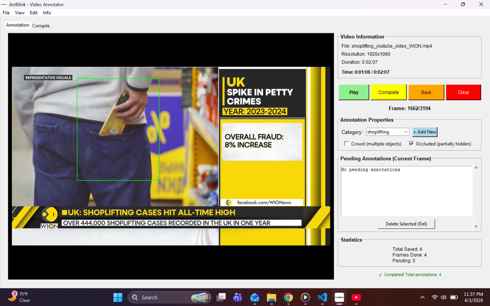
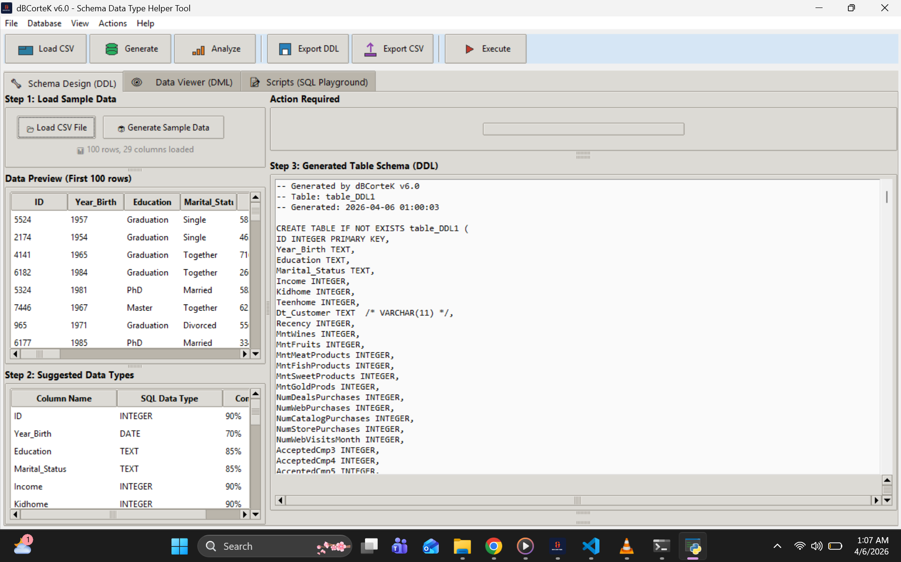
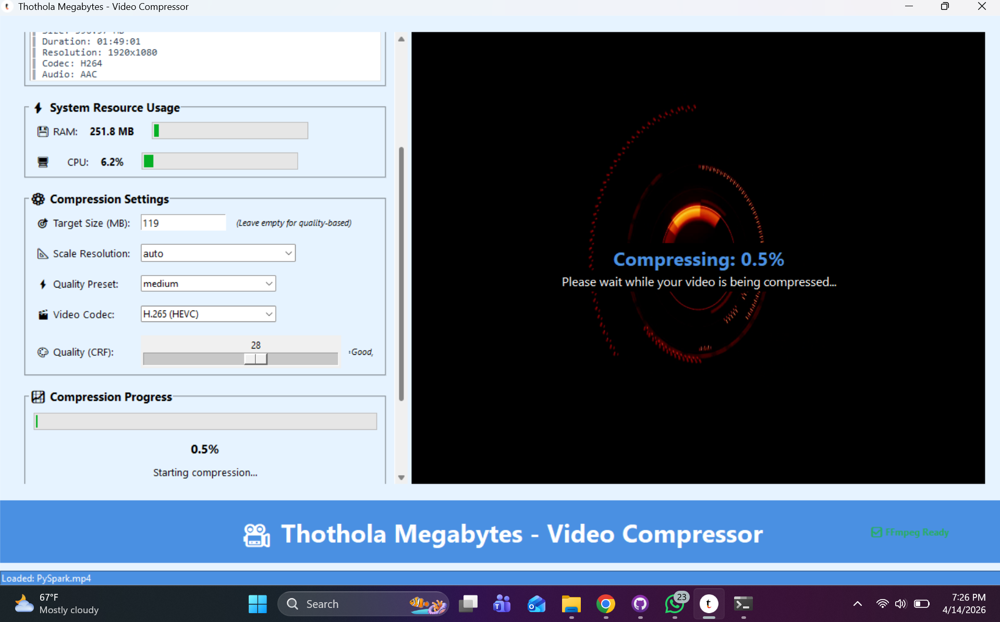
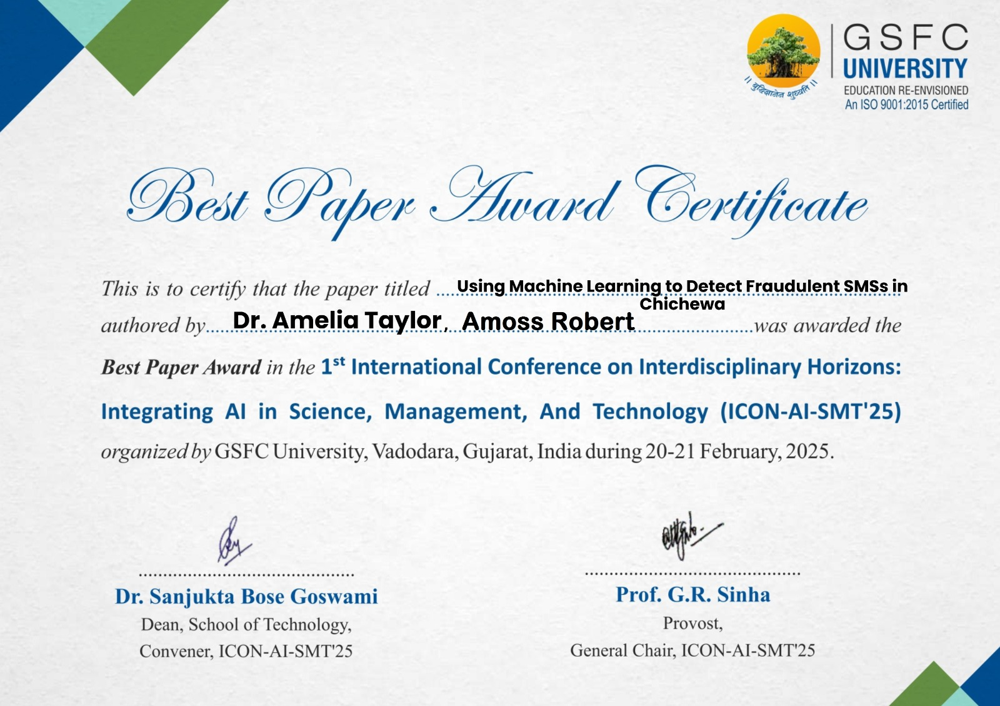

Amoss Robert (Data Scientist & Computer Engineer) - I am a Data Science master student at the African Center of Excellence in Data Science, University of Rwanda. My works span computer vision, imaging, intelligent sensing, data systems, software engineering and integrated hardware software technologies. My research component of my work focuses on spectral signatures of materials and biologically inspired perception systems for building resilient visual information interpretation systems. I have experience in machine learning research, technology project leadership, software solution development and data led digital systems consulting through work with KAI Lab at Malawi University of Business and Applied Sciences as a Machine Learning Researcher and Project Lead, a Data Scientist at the Ministry of Health in the Republic of Rwanda and independent technology projects. My journey started with a Bachelor of Electronics and Computer Engineering with honors degree from University of Malawi the Polytechnic (now MUBAS) where I was introduced to the world of data systems, computational intelligence, software engineering, databases, and computer architectures. On my available time I work as a consultant supporting individuals and organizations with data preprocessing and analysis needs.
- Led a team of Data Science experts and consultants in handling highly confidential Human Resources databases, assessing data quality, schema consistency, migration planning and validation workflows, resulting in a comprehensive recommendations report for the IT Department.
- Developed Python-based pipelines for automated cleaning, structuring and visualization of air quality data from 16 monitoring stations across Rwanda, enabling downstream analytics on seasonality, spatial distribution and policy implications.
- Contributed to team development of a structured digital survey in KoboToolbox with validation rules and skip logic to improve data quality and streamline health workers capacity assessment.
- Led day-to-day coordination of interdisciplinary teams (field data collectors, software developers, project managers) establishing data collection, storage and quality control workflows that delivered 15,000+ raw data records for Machine Learning experimentation.
- Conducted team building trainings prior to data collection, reducing data collectors attrition and operating costs by 20%.
- Developed a Windows-based offline dataset annotation tool using Python Tkinter to automate manual labeling of textual data, reducing completion period by 10% and increasing labeling speed and accuracy.
- Led experimental design ensuring ethics compliance, presented findings at conferences and co-authored an award winning research paper about scalable SMS based Fraud Detection Using Machine Learning and Natural Language Processing technicues. The paper published in Springer Nature.
- Led interdisciplinary team in planning and execution of the GIS focused project in data collection protocols and geospatial data collection for primary, secondary and tertiary schools in Southern Malawi using QGIS and Python scripts, resulting in metadata creation for over 500 schools stored in cloud platform.
📧 Connect with me
amosrobert857@gmail.comOpen for collaboration, research and consulting opportunities.
- Automated YOLO format export
- Real-time video annotation while playing
- No frame extraction needed
- Crowd & occlusion attributes

View on GitHub →- Statistical analysis on sample data
- Data quality at design stage
- CREATE TABLE DDL generation
- Built-in SQL editor

View on GitHub →- Up to 90% size reduction
- Multiple format support
- Resolution presets (4K to 480p)
- H.265 & H.264 encoding etc

View on GitHub →- Real-time geofencing
- Live route tracking
- Risk level monitoring
- Operational decision support

- Landlord-tenant management
- Payment tracking
- Property listing
Freelancing Software Developer - Available for bespoke software development, data preprocessing and analytics consulting.
Data Engineering
Database Management
Data Analysis & Visualization
Software Development
Cloud & Big Data
IT Security & Auditing
Survey Design & Data Collection
Technical Documentation

Click certificate to enlarge